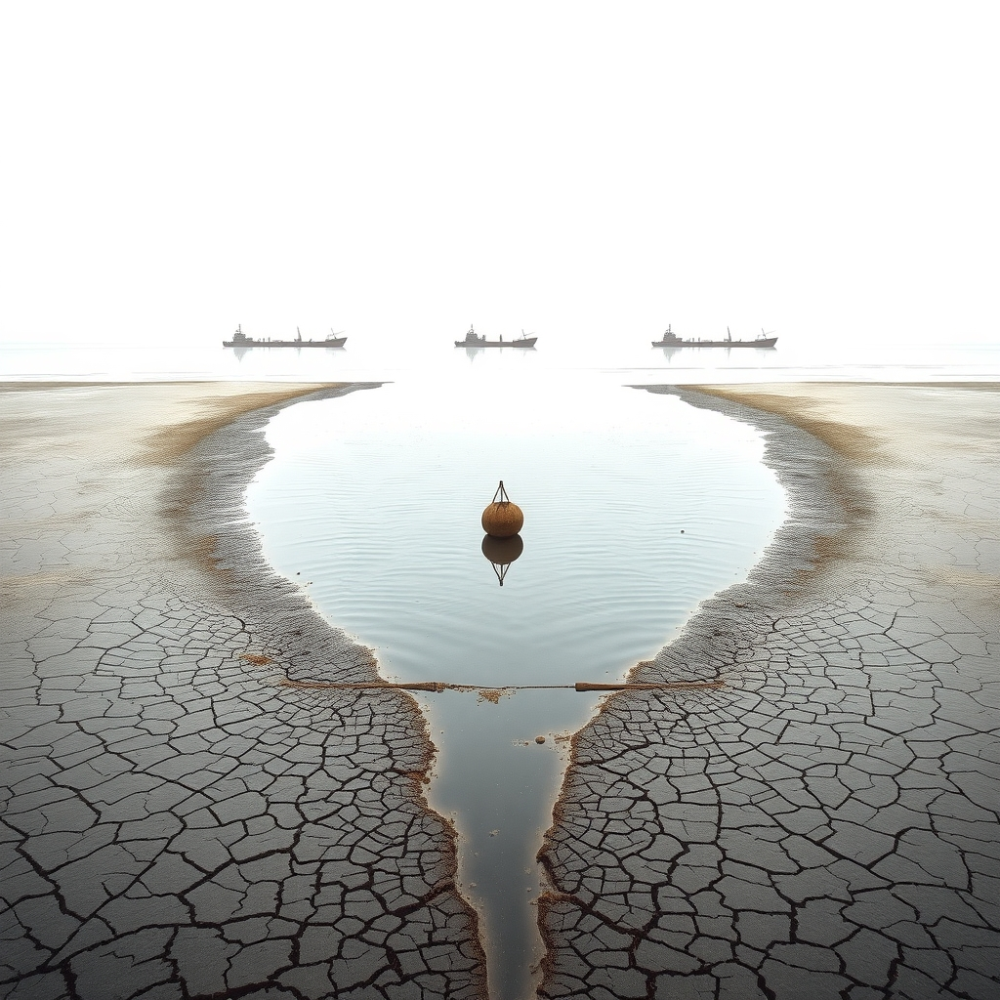
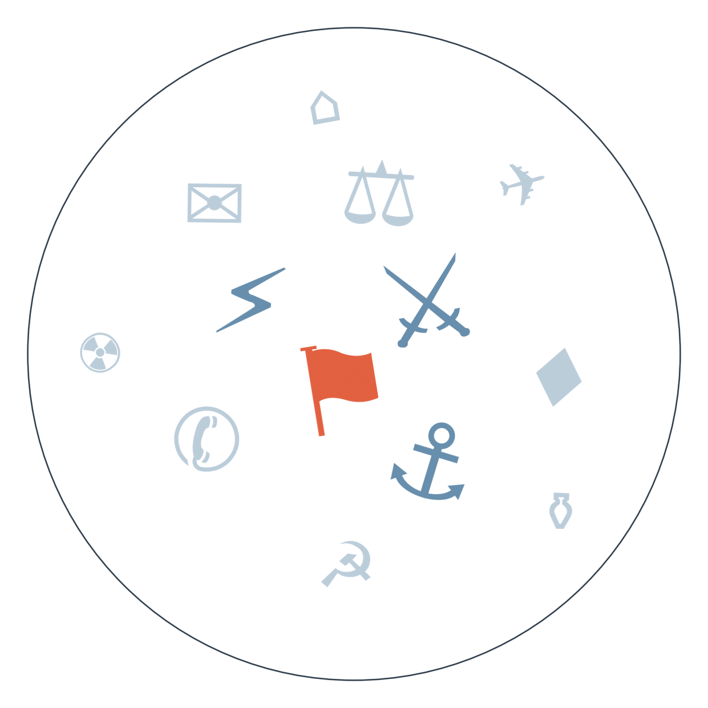

Ранковий бріф · огляд світової преси

Отже, Александар Вучич більше не президент Сербії. Він подав у відставку в неділю ввечері, передав повноваження очільниці парламенту Ані Брнабич і оголосив, що балотуватиметься у прем'єри на позачергових виборах 25 жовтня — за схемою, яку канадська National Post прямо порівнює з путінською рокіровкою 2008 року. Це не кінець його влади, а спроба зберегти її в іншій обгортці, і найближчі чотири тижні покажуть, чи спрацює маневр вдруге.
А тим часом Молдова живе в режимі найвищої гідрологічної тривоги: парламент увів надзвичайний стан через критичне обміління Дністра, що загрожує перебоями електропостачання й зростанням цін на газ. Це продовження історії, яку ми вже стежимо тижнями — від протестів проти тарифів до попереджень про нормування (Енергетична напруга Молдови, кілька тижнів).
Іран знову відкинув американську пропозицію — цього разу йдеться про купівлю урану для цивільних потреб замість відкриття Ормузької протоки. Трамп очікує нових переговорів наступного тижня, а Тегеран паралельно заявляє про "повну готовність до війни". Патова ситуація довкола протоки триває вже понад місяць і не наблизилась до розв'язки (Ірано-американська ескалація, більше місяця).
Британська поліція затримала п'ятьох чоловіків біля авіабази Ферфорд, яку США використовують для ударів по Ірану — підозра на підготовку теракту з вибухівкою. Трамп заявив, що затримані "хотіли завдати великої шкоди"; це перше пряме нагадування, що війна на Близькому Сході має рикошет у Європу.
І ще: швейцарці на референдумі відхилили жорсткішу версію нейтралітету — понад дві третини голосів проти. Ініціатива обмежила б участь Швейцарії в санкціях без схвалення ООН; за спостереженнями французьких медіа, кампанію уважно відстежувала Москва.

Сюжет перший: відставка Вучича.
Замовчують: жодне з наведених джерел не пояснює, чи має опозиція реальний шанс завадити поверненню Вучича через прем'єрство — тема залишається суто процедурною.
Чому розходяться: державні медіа авторитарних країн (Казахстан, Білорусь) уникають будь-якої рамки, що натякала б на маніпуляцію демократичними інститутами, — це небезпечна тема для них самих. Західна преса, навпаки, шукає паралелі з Росією, бо для їхньої аудиторії це історія про ерозію демократичних норм на периферії Європи.
Сюжет другий: захоплення підводного дрона в Ормузькій протоці.
Замовчують: ніхто з наведених джерел не перевіряє незалежно, чи справді дрон існував і чи був захоплений — обидві версії подаються на віру відповідній стороні.
Чому розходяться: європейське агентство тримає нейтралітет, бо працює на аудиторію обох таборів. Al Jazeera підсилює іранську рамку, бо її близькосхідна аудиторія чутлива до наративу опору тиску. Австрійська преса дивиться на ситуацію крізь трансатлантичну призму дипломатичного оптимізму. Британське інформаційне агентство ж цікавиться суто практичним — коли впаде премія за нафту, тож шукає ознаки затягування з боку Ірану.
Торгове перемир'я США-Китай: до 24.09 саміт Сі-Трамп завершився без проривів, але перемир'я продовжили на кілька тижнів → сьогодні комерцміністерство Китаю оприлюднило технічні деталі рамки взаємного зниження мит "300 на 300" → це перший конкретний крок до імплементації домовленості → веде до розвилки 1 жовтня — або новий раунд торгу, або відновлення мит, залежно від того, чи витримає крихка домовленість найближчий тиждень.
Енергетична криза Молдови: середина вересня — протести проти тарифів на газ і електроенергію → парламент попереджає про можливе нормування споживання в межах надзвичайного стану → сьогодні оголошено найвищий код гідрологічної небезпеки через обміління Дністра, що загрожує вже не лише цінами, а самим постачанням → веде до практичного випробування: чи введе Кишинів реальне нормування до 6 жовтня, як зараз обговорюється в парламенті.
Ірано-американська патова ситуація: Іран пропонував семиденний план відкриття Ормузу в обмін на зняття блокади й санкцій → Трамп відхилив пропозицію; за анонімними джерелами (WSJ/Mint, рубрика «Кажуть інші») очікується відновлення бомбардувань Ірану після проміжних виборів → сьогодні відхилено вже новий іранський варіант — про купівлю урану для цивільних потреб → веде до затяжної паузи без явного виходу: обидві сторони, схоже, чекають на американські вибори як на точку відліку для наступного кроку.
Дохідність десятирічних облігацій США сягнула 5,22% — рівня, якого не бачили з 2007 року, і аналітики "Ambito" наголошують, що це не боргова криза, а перегріта економіка. Золото подешевшало нижче 4200 доларів за унцію вперше з 5 серпня. JPMorgan різко знизив прогноз зростання Аргентини до 1,5% на 2026 рік і прогнозує рецесію в третьому кварталі на тлі падіння активності в липні. Деталі торгового плану США-Китай "300 на 300" оприлюднило комерцміністерство КНР (див. ЩО З ЧОГО ВИПЛИВАЄ).
Поки якісна преса розбирає маневр Вучича й спір довкола Ормузу, значна частина світових редакцій — від індійського Times Now до австралійського ABC News — присвячує ранок битві Мадонни й Тейлор Свіфт за нагороди MTV. Швейцарський Blick розганяє тему "дорогої осені" й вимагає від Тегерана "віддати уран", хоча жодних нових фактів про це не наводить — типовий приклад того, як таблоїд підхоплює тему без власного джерела.
Південна Корея висловила "глибоке жалкування" через розкриття Києвом інформації про передачу Сеулу двох північнокорейських військовополонених — це може ускладнити конфіденційний канал обміну даними між Києвом і Сеулом напередодні подальшої координації щодо КНДР. Буданов заявив, що Пхеньян вивчає бойовий досвід війни в Україні для власного переозброєння (див. ПУЛЬС КРАЇН, Україна) — прямий сигнал про довгостроковий ризик для регіональної безпеки, що виходить за межі самого фронту. Ізраїльсько-нідерландський дипломатичний конфлікт через товари з поселень (див. ПУЛЬС КРАЇН, Ізраїль) підкреслює, наскільки глибоко економічні санкції змінюють дипломатичні альянси — модель, яку варто відстежувати й щодо санкцій проти Росії.
Причина обміління Дністра лишається нез'ясованою для міжнародної аудиторії: молдовський політик Чебан публічно заперечує, що падіння рівня води залежить від станції у Вадул-луй-Водє, натякаючи на іншу причину — але жодне велике міжнародне видання не досліджує це питання, обмежуючись переказом надзвичайного стану. Мовчать практично всі, крім місцевих молдовських медіа: тема вимагає технічної експертизи, на яку в редакцій просто немає ресурсу.
Морський інцидент Філіппіни-Китай — перше пряме перешкоджання постачанню з 2024 року — висвітлило лише агентство Bloomberg через gCaptain; жодне азійське видання з дайджесту (SCMP, Yonhap, Focus Taiwan) цю новину не підхопило. Тема витіснена гучнішим сюжетом торгового перемир'я США-Китай, хоча саме вона показує, що військова напруга в Південнокитайському морі не залежить від торгових домовленостей Вашингтона й Пекіна.
Ефіопія: важкі бої й збій телекомунікацій ускладнюють перевірку масштабів конфлікту, і про це продовжують писати лише France 24 та Al Jazeera. Решта світової преси мовчить — не через незручність теми, а через відсутність ресурсу для верифікації в умовах відключеного зв'язку.
Середня впевненість. Технічна готовність Китаю реалізувати перемир'я з США до дедлайну 1 жовтня (див. ЩО З ЧОГО ВИПЛИВАЄ). Джерело — Caixin.
Низька впевненість. Рух литовського парламенту щодо зняття конституційної заборони на ядерну зброю та іноземні бази може означати підготовку до розширення присутності НАТО в Балтії. Ґрунтується на одному джерелі — EUobserver.
Середня впевненість. Нова фаза тиску Китаю на Філіппіни в Південнокитайському морі (див. СЛІПА ЗОНА). Джерело — Bloomberg/gCaptain.
Рахунок: 9 з 22 (базово 7 з 22) — сьогодні +1: підтвердився прогноз про продовження торгового перемир'я США-Китай (горизонт 24.09).
Наші:
Енергоперемир'я Росія-Україна буде порушене принаймні однією стороною до 29.09.2026
Санкції США проти постачальників хуситам будуть запроваджені до 29.09.2026
Перенесена зустріч Ірану з країнами Затоки не відбудеться до 29.09.2026
Трубопровід Схід-Захід у Саудівській Аравії буде повністю відновлений до 30.09.2026.
Кажуть інші:
Трамп (за анонімними джерелами, переказ WSJ/Mint) очікує відновлення бомбардувань Ірану після проміжних виборів — горизонт після 03.11.2026.
Energy Aspects (за Caixin) прогнозує, що збої в танкерних перевезеннях через ірансько-американську війну можуть тривати до кінця 2026 року.
Міністр закордонних справ країни ЄС (за Digi24) попереджає, що Росія планує "щось важливе" цього року, у Путіна лишилось "дві карти" — горизонт до 31.12.2026.
Зеленський (за Delfi Latvia) попереджає, що дефіцит бюджету може призвести до нестачі дронів в Україні.
Найближчими днями: другий тур виборів мера Кракова у жовтні; засідання міністрів оборони ЄС щодо посилення підтримки України та спільних закупівель; 1 жовтня — дедлайн торгового перемир'я США-Китай, підтвердженого на саміті Сі-Трамп.
Базова лінія у прогнозах. Відсоток «базово» — це ймовірність події за інерцією, якщо ніхто нічого не робитиме й нічого не зміниться. Друге число — наша впевненість. Прогноз має сенс лише тоді, коли ці числа розходяться: збіг означає, що ми просто описали поточний стан.
Відсотки в карті уваги. Частка країни в денному обсязі зібраних матеріалів. Не показник важливості події, а показник того, скільки місця країна зайняла в новинному потоці за добу. Різкий стрибок частки зазвичай означає, що в країні щось відбувається.
Стрічки, які не відповіли. Не відповіли: Euractiv (HTTP 403), Al Arabiya (HTTP 403), Il Foglio (API порожньо), El Universal (API порожньо), Milenio (API порожньо), Liga.net (API порожньо).